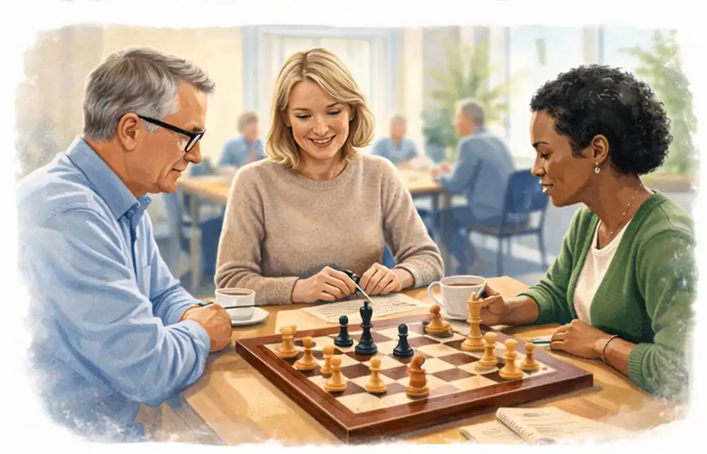

FOR DIG01BEGYND MED
BEGYND MED
NYSGERRIGHED
En samlet kursuspakke til voksne begyndere: 8 uger med instruktør, materialer og tid til at lære hinanden at kende. Du behøver ikke være medlem af en klub.
Find dit begynderforløb